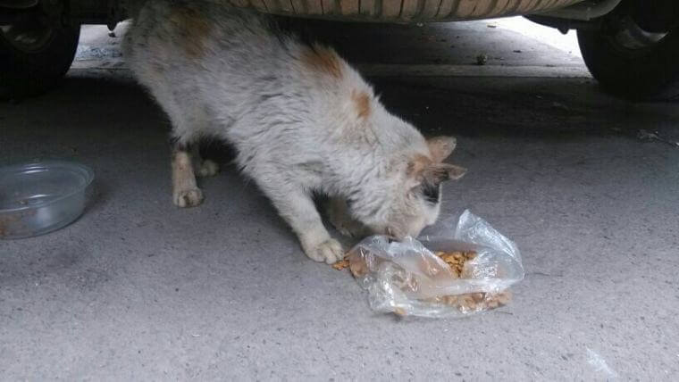
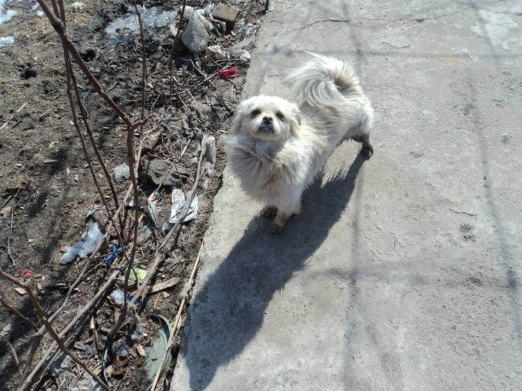

善待流浪动物是社会的底线
甘地曾说，“从对待动物的态度上，可以判断出一个民族是否伟大，精神是否高尚。通过对待动物的方式可以判断一个民族的伟大和道德进步的程度。”
随着人们生活水平的提高，越来越多的人开始饲养宠物。但由于种种原因，相当数量的宠物遭到遗弃。而相关组织或部门收容能力有限，绝大部分流浪猫、流浪狗等小动物依然没有容身之处，有的地方甚至在酝酿大规模捕杀流浪猫狗的行动。先不说这样对待那些可爱的猫狗是否人道，这种方式真的可以控制流浪猫狗过度繁殖，真正杜绝狗患、猫患吗？
从常规来讲，捕杀流浪猫狗可能会在短时间内减少地区范围内猫狗的数量。但长此以往下去最终导致的结果却往往会适得其反：短时间内流浪猫狗的数量下降，生存条件得到改善，缺少了争夺食物的竞争对手，反而会吸引其他地方的更多的猫狗前来补充，甚至加快其繁殖速度，这样就会形成一种恶性循环，捕杀―――补充（增多）―――捕杀……，如此循环往复，并不能从根本上解决问题。我们可以也应该采取更为人道和理性的方式来处理这个问题，那就是对流浪猫狗实行绝育手术。这不仅是解决这一问题的最为有效的手段，也是对动物生存权的一种尊重，更是一座城市的底线，体现了一座城市的文明。
随着流浪猫狗的增多，人与动物间的矛盾越来越多，虐猫虐狗事件频频见诸网络及报端，有的是为了满足变态的欲望，有的是借残害猫狗泄愤，更有甚者，以虐猫虐狗取乐，而更普遍的虐待者恰恰是猫狗的曾经的主人。如何减少流浪猫狗，又如何对待已有的流浪猫狗以及产生的问题，不仅仅是行政问题、法律问题，还是教育问题、道德问题。对待这些问题的态度和解决这些问题的方法，不仅反映了政府的治理水平，也折射出一个社会的文明程度。
给流浪猫狗做绝育手术，可以防止后代继续流浪，从根本上杜绝了狗患、猫患，而且绝育手术可以杜绝猫狗的一些令人烦恼的坏习惯，比如到处撒尿，不安的狂叫等，而变得乖巧温顺讨人喜欢，从而减少了被主人抛弃的可能性。
不要只在需要猫狗的陪伴时，对它们嘘寒问暖，而在它们对我们的生活造成稍许不便时，就对它们进行惨无人道的捕杀，它们与人类都是大自然重要的组成部分，享有同样的生存权，用绝育代替捕杀，尊重动物的生存权，才能真正反映社会的进步和城市的文明。